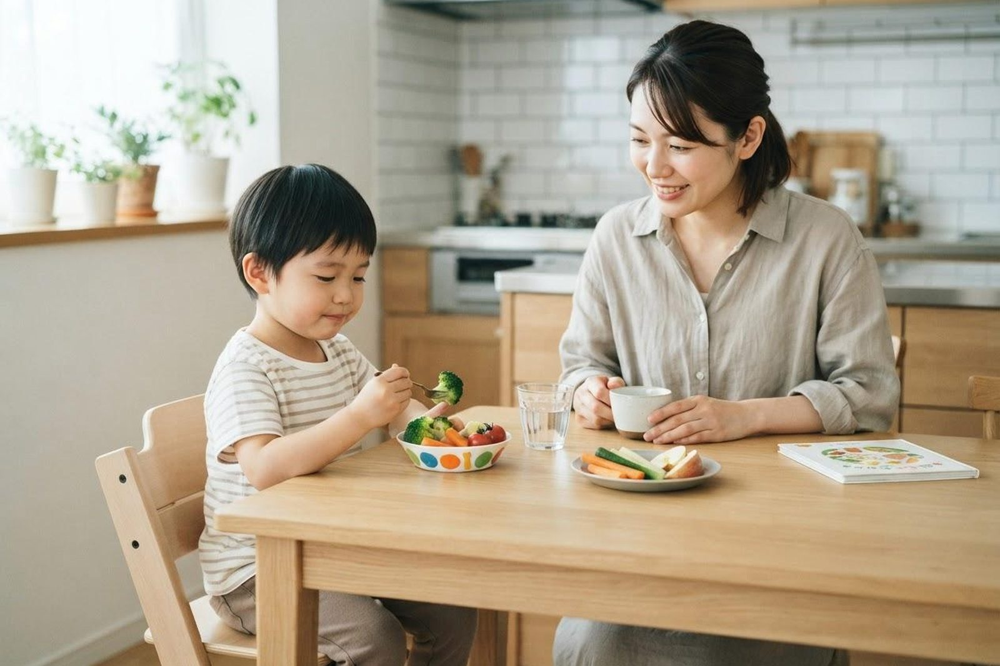

子どもが何日も便が出ません。様子を見ていて大丈夫でしょうか？
A. 回答「何日出ていないか」だけで判断する必要はありません。それ以上に大切なのは、便が硬い・出すときに痛がる・便意をこらえているといった様子があるかどうかです。子どもの便秘は「出すときに痛い → 痛いから我慢する → 便がさらに硬くなる → もっと痛い」という悪循環に入りやすいとされており、この輪が回り始めると自然には抜けにくくなると考えられています。3〜4日以上出ない状態が続く、あるいは毎日出ていても硬くて苦しそうなら、早い段階でご相談いただいて構いません。とくに嘔吐を伴う、おなかが張って痛がる、便に血が混じる、体重が増えないといったときは、様子を見ずに受診をご検討ください。

子どもの便秘で起こりやすい「悪循環」
大人の便秘と違い、お子さんの便秘でいちばん問題になるのは「痛み」と「我慢」です。硬い便を出すときに肛門が切れて痛い思いをすると、お子さんは次から排便そのものを避けるようになります。ところが便をためるほど水分が抜けて硬くなり、次はもっと痛くなる——この繰り返しで悪循環ができあがっていきます。
- 便がたまって直腸が広がる：便意そのものを感じにくくなり、「出したいのに気づかない」状態になることがあるとされています。
- もれ（便失禁）が起こることがある：硬い便のすき間からゆるい便がもれ出し、下痢と間違われることがあります。
- 食欲や機嫌に影響することがある：おなかが張って食が細くなったり、なんとなく元気がない状態が続いたりすることもあります。
小児の便秘は「正しく診断・治療をすれば比較的すみやかに克服できる」一方、十分な治療が行われないと悪化しうるとされています。放置せず早めに相談していただいてよい症状です。
きっかけになりやすいこと
お子さんの便秘は、生活の節目に始まることが少なくありません。
- 離乳食の開始・卒乳のころ：便の性状が変わり、硬くなりやすい時期とされています。
- トイレトレーニング：うまくいかない焦りや叱られた経験が、排便を我慢する習慣につながることがあります。
- 入園・入学、環境の変化：園や学校のトイレで排便したくない、休み時間に間に合わないといった理由で我慢が習慣化することがあります。
- 体調不良や水分不足：発熱や胃腸炎のあと、暑い時期の水分不足などをきっかけに便が硬くなることがあります。
- 食事内容や生活リズム：食物繊維や水分が不足しがちな食生活、朝の時間に余裕がない生活も関係するとされています。
おうちで確認したいサイン
こんな様子はありませんか？
- 週に2回以下しか排便がない、または3〜4日以上出ない日が続く
- 便が硬くコロコロしている、または非常に大きい便が出る
- 出すときに痛がる、いきんで泣く、顔を真っ赤にする
- 足をクロスさせる・つま先立ちになるなど、便意をこらえる姿勢をとる
- トイレやおむつに血がつく
- 下着に便が少しもれていることがある
- おなかが張っている、食欲が落ちている
受診の目安
次のような場合は、日数にかかわらず医療機関にご相談ください。
夜間・休日にお子さまのことで迷われるときは、こども医療でんわ相談「＃8000」（岡山県）にご相談いただけます。日本小児科学会の「こどもの救急」も目安になります。
すぐに受診を検討してください
- 便が出ないことに加えて嘔吐がある（とくに繰り返す、緑色の吐物）
- おなかが張って（膨らんで）激しく痛がる、触られるのを嫌がる
- 便やおむつに血が混じる、イチゴジャムのような便が出る
- 体重が増えない、または減ってきている
- ぐったりして元気がない、顔色が悪い
- 生後まもない赤ちゃんで、便がほとんど出ずおなかが張っている
早めの受診をおすすめします
- 硬い便で毎回痛がる、排便をこわがって我慢するようになった
- 便に血がつくことが繰り返しある
- 下着に便がもれることがある
- 市販の方法や食事の工夫を続けても1〜2週間改善しない
- トイレトレーニングが便秘をきっかけに進まなくなっている
- 浣腸を使わないと出ない状態が続いている
夜間・休日で判断に迷うときは、全国共通の「こども医療でんわ相談 ＃8000」で小児科医師や看護師に相談できます（対応時間は都道府県ごとに異なります）。
浣腸は使ってもよいのでしょうか
たまった硬い便をいったん出してあげること自体は、治療の第一歩として行われることがあります。ただし、ご家庭での判断でこれを繰り返すと、原因の評価が遅れたり、お子さんが排便をますますこわがるようになったりすることがあります。使う・使わないの判断や続け方は、医師にご相談のうえ決めていただくことをおすすめします。
あわせて、水分をこまめにとる、朝食後に5分ほどトイレに座る習慣をつくる、出たときはしっかりほめる、といった生活面の工夫も、治療と並行して行うことが大切とされています。うまくいかなくても叱らないことが、悪循環を断つうえで重要と考えられています。
当院での対応（受診の実際）
当院は小児科を標榜しており、お子さんの便秘のご相談も承っています。診察では、これまでの排便の様子やきっかけをうかがい、おなかの診察で便のたまり具合や張りを確認します。必要と判断した場合には、腹部のレントゲン検査などで状況を確認することもあります。
- 予約：一般の診察は予約なしで当日受診いただけます。受付順にご案内します。
- 所要時間：診察のみであれば通常は短時間で終わります。検査を行う場合はもう少しお時間をいただきます。
- 費用：保険診療の対象となります。お住まいの自治体の子ども医療費助成もご利用いただけます。
- 持ち物：健康保険証（マイナ保険証）、子ども医療費受給資格者証、母子手帳。排便の日付や便の様子をメモしたものがあると診療に役立ちます。
- 診療時間：月〜土曜日 7:00〜12:00 ／ 月〜金曜日 14:30〜18:30（土曜日は14:30〜17:30まで）。無料駐車場を22台分ご用意しています。
受診時に伝えていただきたいこと
- 何日おきに出ているか、最後に出たのはいつか
- 便の硬さ・太さ・量、血がついていないか
- 出すときに痛がるか、我慢する様子があるか
- いつごろから続いているか、思い当たるきっかけ（入園、トイレトレーニングなど）
- 食事や水分のとり方、食欲や体重の変化
- おなかの張り、嘔吐、発熱などほかの症状の有無
参考にした情報
お子さんの便秘が気になるときは、お気軽にご相談ください
📞 086-525-0600最終更新：2026年8月26日